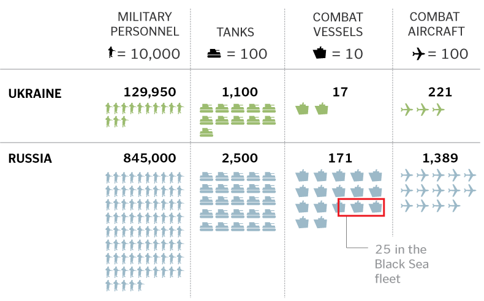

Crimea was added to the Russian map on Tuesday, March 18, 2014, after the Crimean peninsula successfully approved a referendum to rejoin Russia. Russian forces in Crimea had secured strategic Ukrainian military installations and civil institutions two weeks prior to the vote and postured their military strength around the former Ukrainian province.
The military installations in Crimea allowed Russian forces to quickly secure strategic military and civilian sites, even those defended by the Ukrainian military.
Ukraine became an independent republic after it succeeded from the Union of Soviet Socialist Republics (USSR), the Soviet Union, in 1991.
Much of western Ukraine advocates closer ties with the European Union while eastern and southern regions look to Russia for support. The stark east-west divide was evident in Viktor Yanukovych's 2010 presidential election runoff victory over Yulia Tymoshenko.


Russian forces secured strategic sites within Crimea while massing troops on the southeastern Ukrainian border from nearby military bases. NATO claims there are now more than 20,000 troops near the border while Russia claims their troops are merely involved in routine training exercises.
Comparing Ukraine and Russian military forces:
SOURCES: Ukrainian census; Ukraine Central Election Commission; International Institute of Strategic Studies; Associated Press; IHS Jane’s; CIA World Factbook; Ministry of Defence of Ukraine; Federation of American Scientists